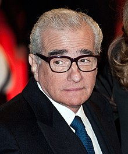

is an Italian and American filmmaker and historian, whose career spans more than 50 years.
Scorsese's body of work addresses such themes as Sicilian-American identity, Roman Catholic concepts of guilt and redemption, faith, machismo, modern crime, and gang conflict.
Many of his films are also known for their depiction of violence and liberal use of profanity.
Part of the New Hollywood wave of filmmaking, he is widely regarded as one of the most significant and influential filmmakers in cinematic history.
In 1990, he founded The Film Foundation, a nonprofit organization dedicated to film preservation, and in 2007 he founded the World Cinema Foundation.
He is a recipient of the AFI Life Achievement Award for his contributions to the cinema, and has won an Academy Award, a Palme d'Or, Cannes Film Festival Best Director Award, Silver Lion, Grammy Award, Emmys, Golden Globes, BAFTAs, and Directors Guild of America Awards.
He has directed works such as the crime film Mean Streets (1973), the vigilante-thriller Taxi Driver (1976), the biographical sports drama Raging Bull (1980), the black comedies The King of Comedy (1983), and After Hours (1985), the religious epic drama The Last Temptation of Christ (1988), the crime film Goodfellas (1990), the psychological thriller Cape Fear (1991) and the crime film Casino (1995), some of which he collaborated on with actor and close friend Robert De Niro.
Scorsese has also been noted for his successful collaborations with actor Leonardo DiCaprio, having directed him in five films, beginning with Gangs of New York (2002) and most recently The Wolf of Wall Street (2013).
Their third film together, The Departed (2006), won Scorsese the Academy Award for Best Director in addition to the film winning the award for Best Picture.
Their collaborations have resulted in numerous Academy Award nominations for both as well as them winning several other prestigious awards.
Scorsese's other film work includes the biographical drama The Aviator (2004), the psychological thriller Shutter Island (2010), the historical adventure drama Hugo (2011) and the religious epic Silence (2016).
His work in television includes the pilot episodes of the HBO series Boardwalk Empire and Vinyl, the latter of which he also co-created. With eight Best Director Oscar nominations, he is the most nominated living director and is tied with Billy Wilder for the second-most nominations overall.
As a fan of rock music, he has directed several documentaries on the subject, including The Last Waltz (1978), No Direction Home (2005), Shine a Light (2008), and George Harrison: Living in the Material World (2011).